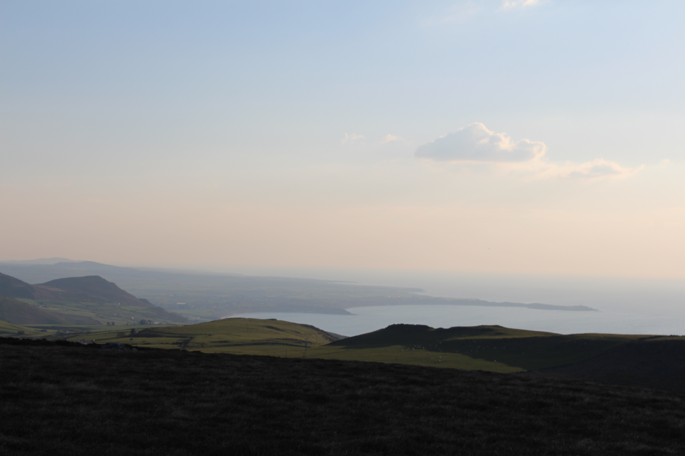

Porthdinllaen a’r ffordd dyrpeg
Along the coast to the southwest of Tre'r Ceiri, a long and narrow peninsula can be seen stretching out to sea. This is the Porthdinllaen, where you can see the remains of an old Iron Age fort’s defenses. The word ‘Din’ means stronghold or fort, meaning that ‘Dinllaen’ would be the ancient name of the fort that was on the peninsula. That was the name then given to the province (cwmwd) in which the fort was located, one of the three provinces that formed the cantref of Llŷn. Cwmwd and cantref were the names given to ancient administrative units in Medieval Wales. The element 'llaen' in the name, as well as the name 'Llŷn' itself, comes from the same root as the Irish place name Laighin (Leinster), a former kingdom in the south-east of Ireland. This suggests a close link between Llŷn and Ireland in a time when the maritime routes was much easier than travelling cross-country.
In the shadow of Porthdinllaen is the port itselflf is seen. Over the centuries there has been several attempts made to establish Porthdinllaen as the main harbour of the mail ships for Dublin, replacing Holyhead. The most prominent of these occurred in the early nineteenth century, following the British and Irish Act of Union which came into force in early 1801, when Irish MPs were forced to travel to Parliament in London.
In 1806 an Act of Parliament was passed establishing the Porthdinllaen Harbour Company and work was begun to erect a wharf and hotel for travelers. The hotel was named The Whitehall, but passengers never stayed there to await the ship for Dublin as the plan ultimately failed, and Holyhead was able to hold onto the right to be the gateway from Wales to Ireland.
However, one can still see this intention of this grand plan today. Before the Act was passed to develop the harbour there was an Act in 1803, creating a better road from Porthdinllaen towards Capel Curig, where it joined the Postal Route to London. Several clergymen and landowners in Llŷn and Eifionydd had come together to set up a trust – The Porthdinllaen Turnpike Company – to seek parliament's right to create the new road investing a total of £4,760 in the scheme. The work of creating the road and building bridges was given to different masonry crews, and they modified some of the pre-existing stretches of the road, as well as creating some completely new sections of country roads, erecting turnpikes or tollgates at different points on it so that passengers could have to pay a toll for its use.
Unlike the rather winding country roads that existed before, the new turnpike road was to follow as straight a route as possible. The road is seen coming from the direction of Porthdinllaen heading straight for the Boduan area, where there was a turnpike. At that point the road split in two, with one road passing through the town of Pwllheli and the other going straight across country towards Penygroes and Llanystumdwy. Here, the turnpike cottage can still be seen at the point where the road once again joined the road Pwllheli, before proceeding through Llanystumdwy, Cricieth and Tremadog. From Gerrig y Rhwydwr. beyond Tremadog, other trustees were responsible for the road up through Beddgelert and Nant Gwynant to Capel Curig.
The tolling right expired on 1 November 1872 and the gates were pulled down, and it is doubtful whether or not the but the trustees made a significant return on their investment.
